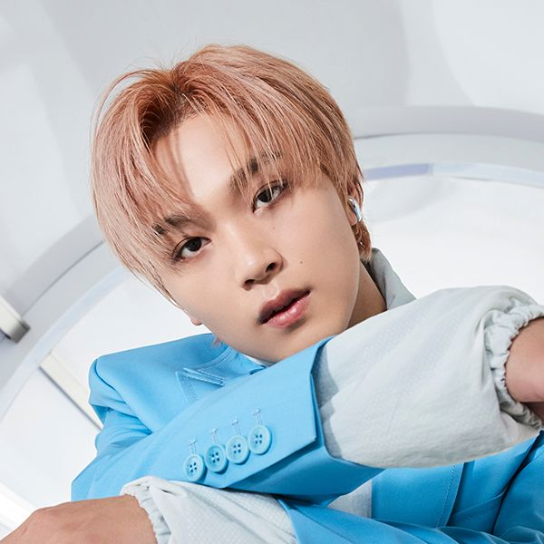

- MARK
- RENJUN
- JENO
- HAECHAN
- JAEMIN
- CHENLE
- JISUNG
HAECHAN

SM엔터테인먼트의 보이그룹 NCT와 서브 그룹 NCT 127, NCT DREAM, NCT U의 멤버.
NCT에서 한국을 베이스로 활동하는 모든 유닛에 소속된 멤버이다. 팀 내에서 메인보컬과 리드댄서를 맡고 있다.
2016년 7월 2일 '해찬'이라는 예명으로 유타, 윈윈과 함께 NCT 127의 원년 데뷔 멤버로 공개되었다.
캐치프레이즈는 풀썬 또는 시청률 37.5%의 해찬캠이다.